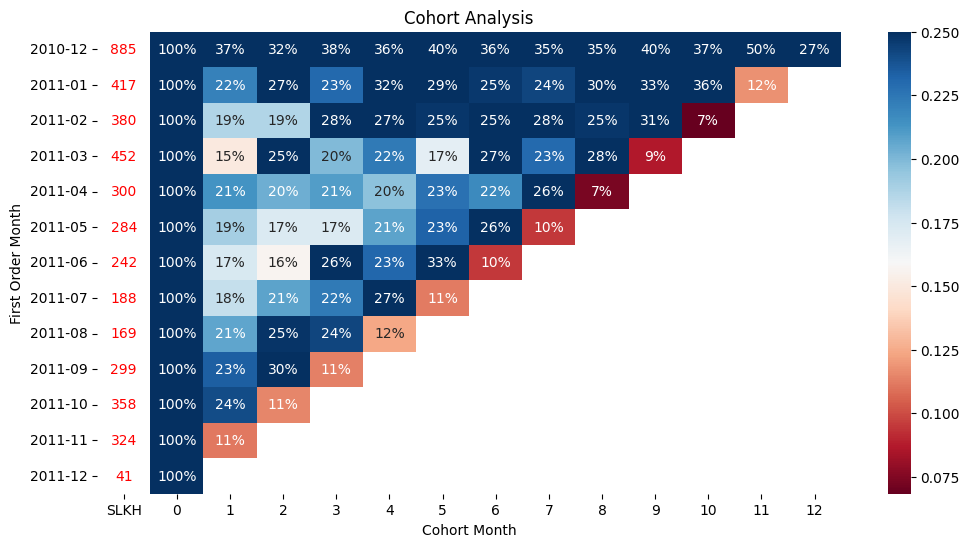

Customer Retention & Behavior Analysis
Customer value is highly unevenly distributed.
A small number of long-term customers contribute disproportionately high transaction activity, while the majority churn after their first month.
This highlights the importance of retention strategy and VIP customer management over pure customer acquisition.
Key Findings
- Customer acquisition declines over time
- November 2011 shows strongest retention performance
- December 2010 cohort demonstrates highest customer loyalty
- Long-term retention varies significantly across cohorts
Cohort Retention Heatmap

The heatmap highlights customer retention trends across monthly cohorts, showing strong loyalty patterns among early customer groups.
Business Insights
- Recent acquisition campaigns may be losing effectiveness
- Retention programs in late 2011 appear highly successful
- High-retention cohorts should be analyzed for customer behavior patterns
- Customer quality matters more than acquisition volume
Customer Behavior Analysis
- One-time buyers: Customers who purchased once and churned immediately
- VIP customers: Long-term active customers with consistently high transaction frequency
- Bulk buyers: Customers generating high short-term sales volume but low retention
- Super VIP customers: Extremely loyal customers contributing significant long-term value
Most customers churn after the first month, while a small group of loyal customers generates disproportionately high business value.
Recommendations
- Replicate successful retention strategies from high-performing cohorts
- Improve customer acquisition targeting
- Focus on customer lifetime value and loyalty programs
- Analyze characteristics of high-value customer segments